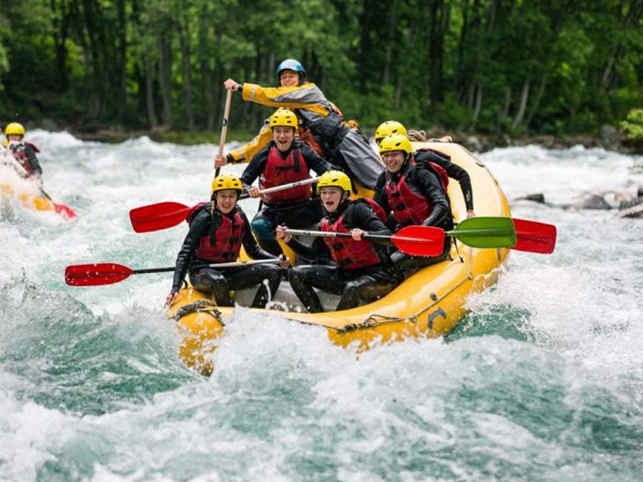
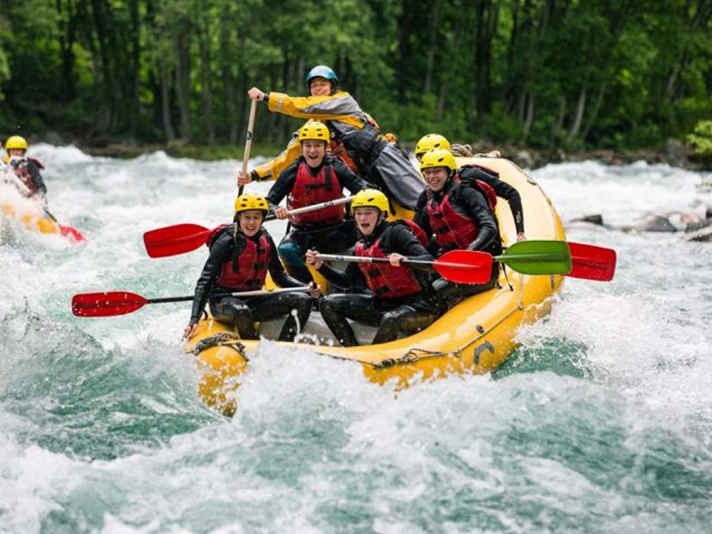

Rakshan Tours and Travels is the leading integrated travel services company in the country offering a broad spectrum of services that include Foreign Exchange, Corporate Travel, Leisure Travel, Value Added Services, Visa & Passport services and E-Business. The company set up its first office in India in 2020.
Rakshan Tours and Travels Group spanning 5 countries, a team of over 588 and a combined revenue in excess of Rs. 690.3 Cr. for the financial year ended March 31, 2022, operates leading B2C and B2B brands including, Thomas Cook, SOTC, TCI, SITA, Asian Trails, Desert Adventures, Luxe Asia, Kuoni Hong Kong, Sterling Holiday Resorts Limited, Travel Circle International Limited.
Adventure
Spirit of Adventure/ Allure of AdventureScale the heights of thrill, or plummet to the depths of excitement or if you're truly daring, survey gorgeous lands and waters, while suspended in the sky. All this and more awaits you as you explore land, water and sky adventures in the country. From trekking, mountain biking and mountaineering in the secluded snow-capped Himalayas to surfing, rafting, scuba diving and snorkelling, there are a multitude of options for thrill seekers.
 

Click here for more adventurous activities !
Pilgrim's Progress
India is its billion people. And it is safe to say that these people define what spirituality in India is. The most prominent religions in the country are Hinduism, Islam, Christianity, Buddhism, Sikhism and Jainism. Apart from these there are several other schools of thoughts. The country is filled with many spiritual destinations which should not be missed by anyone looking for the true Indian experience. These are open and welcome to everyone.
Click here to know some major pilgramage places in India!
Nature And Wildlife
From hauntingly beautiful snowy escapades to lush forests and hills of rolling green, from the endless golden beaches to the sapphire and emerald lakes embedded in the landscape, the natural beauty of the Indian subcontinent is unparalleled. The unspoilt and unexplored terrains of the country leave one in awe of their breathtaking splendour. Moreover, the differences and contrasts of one region from another accentuate the appeal of these landscapes - be it the frigid cold deserts of Leh that call to the soul-searcher in you or the sun-drenched mystique desert dunes of Rajasthan that take you back to the times of royals. Starting from the snow-capped Himalayas in the north, traversing the deserts of Rajasthan, crossing the lush forests of Madhya Pradesh and then sailing in the expansive backwaters of Kerala, and finally diving into the pristine waters of the Andaman and Nicobar Islands, the journey is full of adventurous highlands and serene plains and lowlands. A land boasting a diverse variety of flora and fauna, India is also home to many national parks, wildlife sanctuaries, tiger reserves and biosphere reserves, which offer enchanting wildlife sightings.
Click here to know some major nature and wildlife spots in India!
Yoga And Wellness
India's sun-kissed coastlines, peace-permeated hill stations and breezy riversides offer a host of nutritious food, spas, yoga, detox therapies, Ayurveda, naturopathy, Vedanta and meditation techniques, retrieved and curated from the most ancient of sciences and arts. With innumerable ways to keep both the mind and body aligned, peaceful and in perfect health, the country is the perfect stopover to holiday at a softer pace.
Heritage
A land resounding with the riches and glories of opulent dynasties, powerful rulers, flourishing civilisations and profound history, India has a splendid heritage that is reflected in its architecture, monuments, arts, crafts, cultures and even religions. While formidable forts, ancient temples and grand palaces testify of the grandeur of times gone by, the various museums and galleries scattered across the country act as inventories of India's seamless past. Such is the magnificence of the structures in the country that UNESCO has identified several of them as heritage sites.
Luxury
Home to several royal dynasties that enjoyed an opulent and an ostentatious lifestyle, India is a land steeped in history. Over the years, age-old cultures, traditions, arts and practices have been blending seamlessly with modern comforts, culminating to tailor a regal experience for tourists who want to sample luxury. From its northernmost tip to its southernmost end, the country has a number of luxurious escapades that warrant a splurge. While spanning its eastern corner to the western coast, India offers luxe experiences galore — these range from rejuvenating beach getaways, luxurious oases in the desert, jungle jaunts, and even glorious experiences on cruises and trains.
Art
The land where classical melodies merge seamlessly with a mesmerising mosaic of exquisite paintings, ancient weaves and other handicrafts, divine dance forms, fascinating festivals and scintillating sculptures, India is a vibrant potpourri of arts and crafts. With each of its states and union territories bursting with ethnic flavours that multiply at every turn, the country sparkles with vitality and vivacity.
In case you are not satisfied with the assistance provided, please click here